Créditos de Imágenes
Autoría, licencia y origen de todas las imágenes que ilustran las fichas de producto de esta web.
Nota: las imágenes son ilustrativas de la categoría de cada producto (por ejemplo, una foto de un smartphone genérico en la ficha de un móvil concreto). En algunas fichas se utiliza una foto real del producto de la marca publicada en Wikimedia Commons con licencia libre: corresponde a una variante de la gama, no necesariamente al formato exacto enlazado. Ninguna imagen es una fotografía oficial del fabricante. Los precios, disponibilidad y características sí proceden de Amazon.
Si eres el autor de alguna imagen y prefieres que se retire, escríbenos a 2025generation@gmail.com y la quitamos en 24-48 h.
| Imagen | Categoría | Autoría | Licencia | Origen |
|---|---|---|---|---|
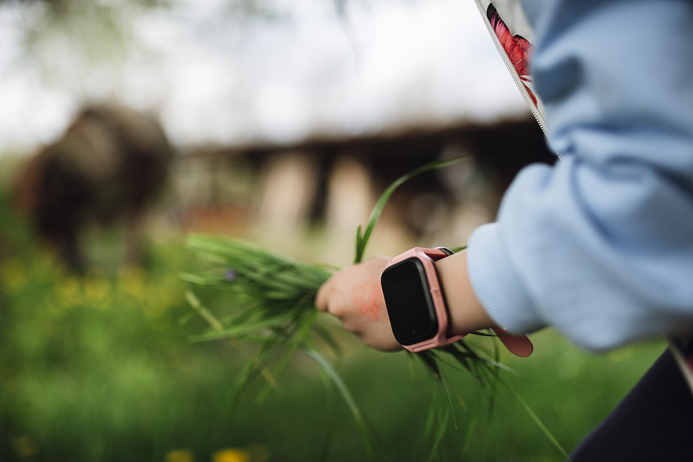 |
Reloj inteligente A child wears a smartwatch on her wrist while picking grass.jpg |
Shixart1985 | CC BY 2.0 | Fuente original |
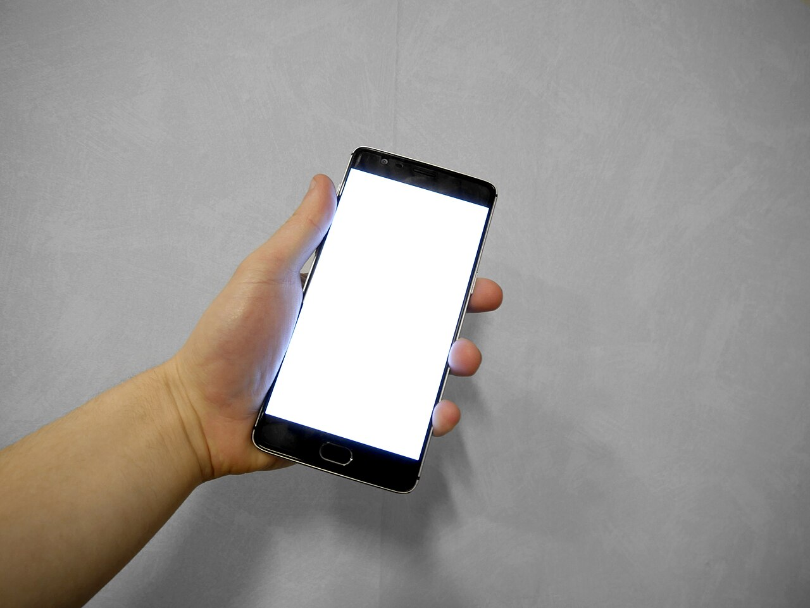 |
Teléfono móvil File:Hand holding smartphone with blank white screen.jpg |
Santeri Viinamäki | CC BY-SA 4.0 | Fuente original |
 |
Portátil Man Holding Laptop Computer Typing While Dog Watches |
Image Catalog | cc0 | Fuente original |
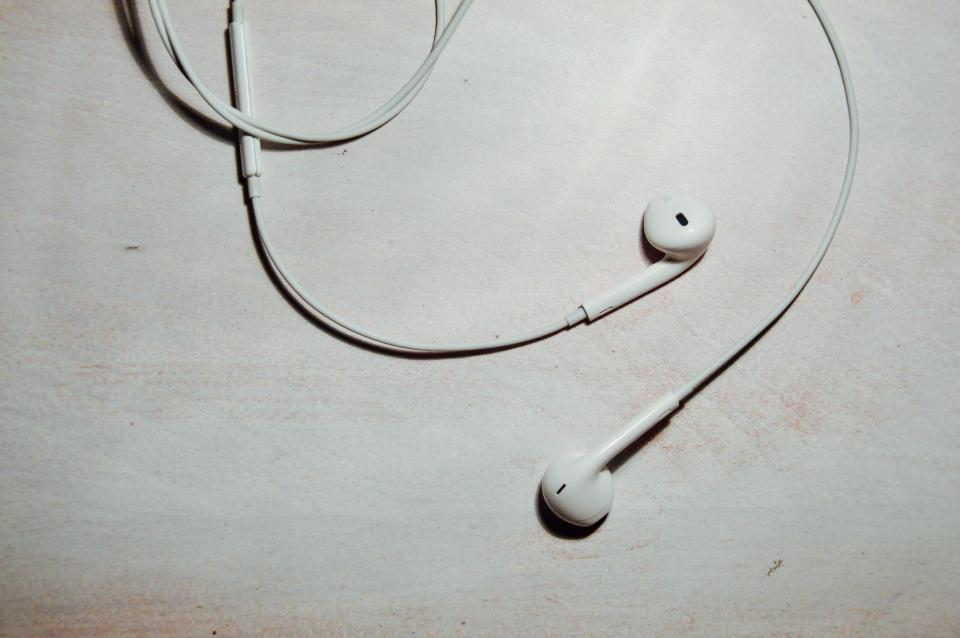 |
Auriculares inalámbricos Headphones Earbuds |
Piotr Lohunko | cc0 | Fuente original |
 |
Altavoz Bluetooth R.O.GNT Bluetooth Speaker 0601 Weiß |
GBPublic_PR | by | Fuente original |
 |
Robot aspirador RVC3N Robotic Vacuum Cleaner 'Kreng' on the job |
dvanzuijlekom | by-sa | Fuente original |
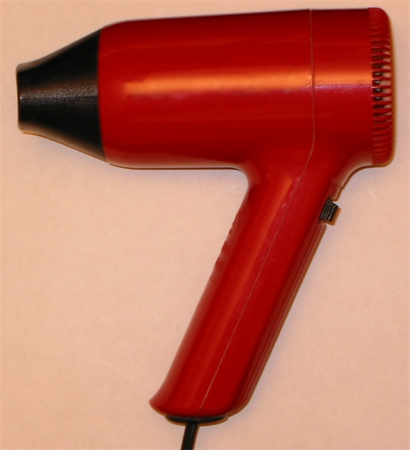 |
Secador de pelo Hair dryer |
Magnus Manske | by-sa | Fuente original |
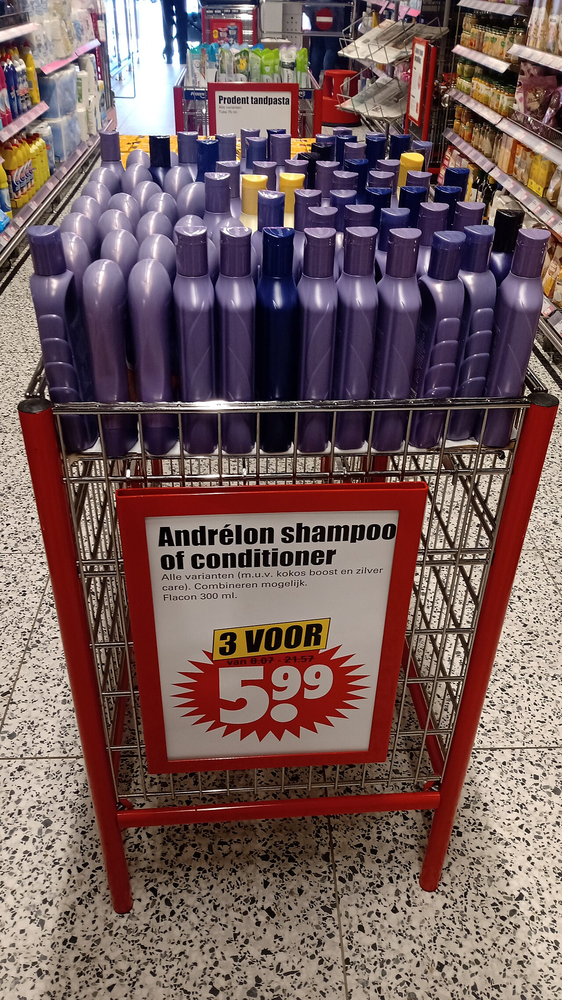 |
Champú File:Shampoo Bottle made of PLA-Blend Bio-Flex.jpg |
F. Kesselring, FKuR Willich | CC BY-SA 3.0 de | Fuente original |
 |
Crema cosmética Cream in round container.jpg |
stux | CC0 | Fuente original |
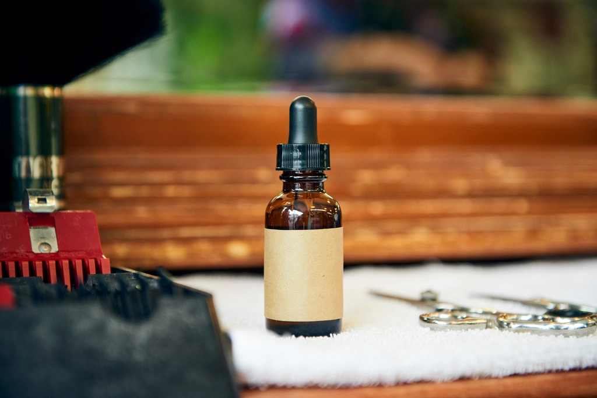 |
Sérum facial Cosmético en frasco aplicador (imagen de Openverse) |
Openverse / autor no especificado | CC0 | Fuente original |
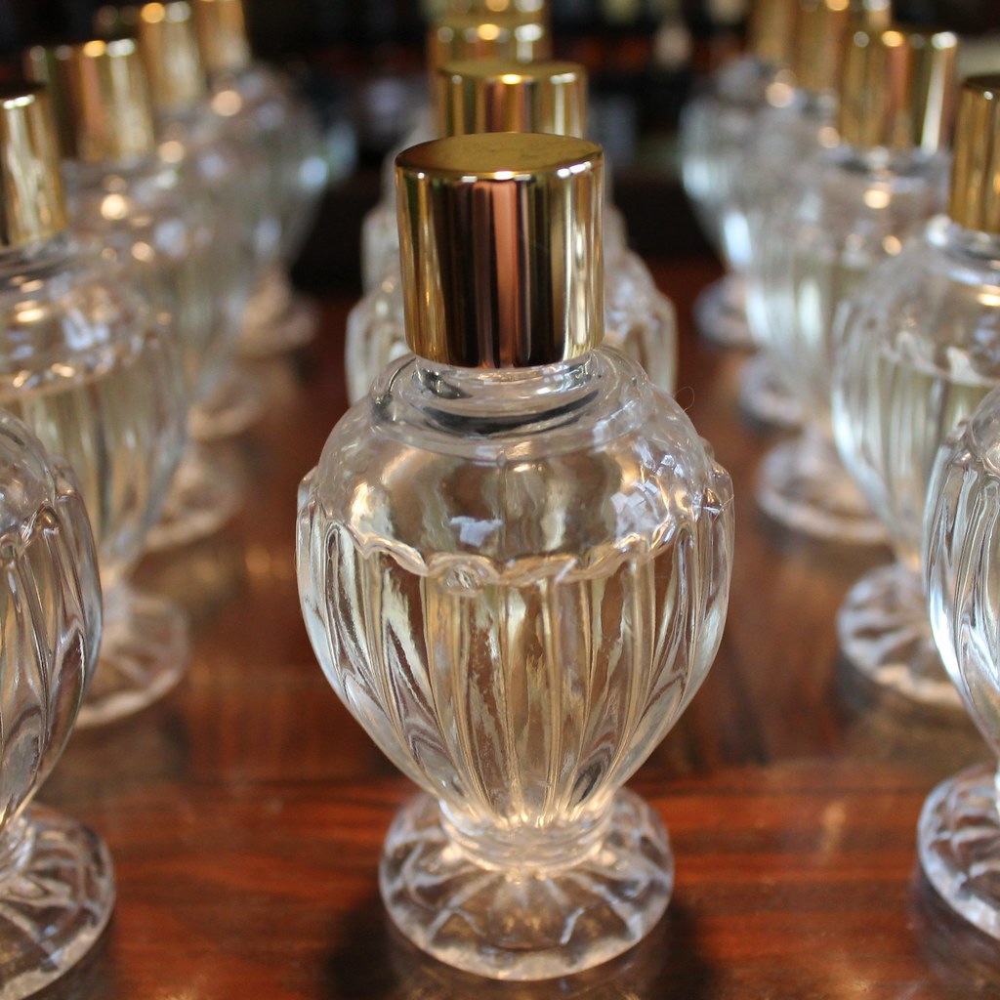 |
Perfume Perfume Bottles |
Vetiver Aromatics | by-sa | Fuente original |
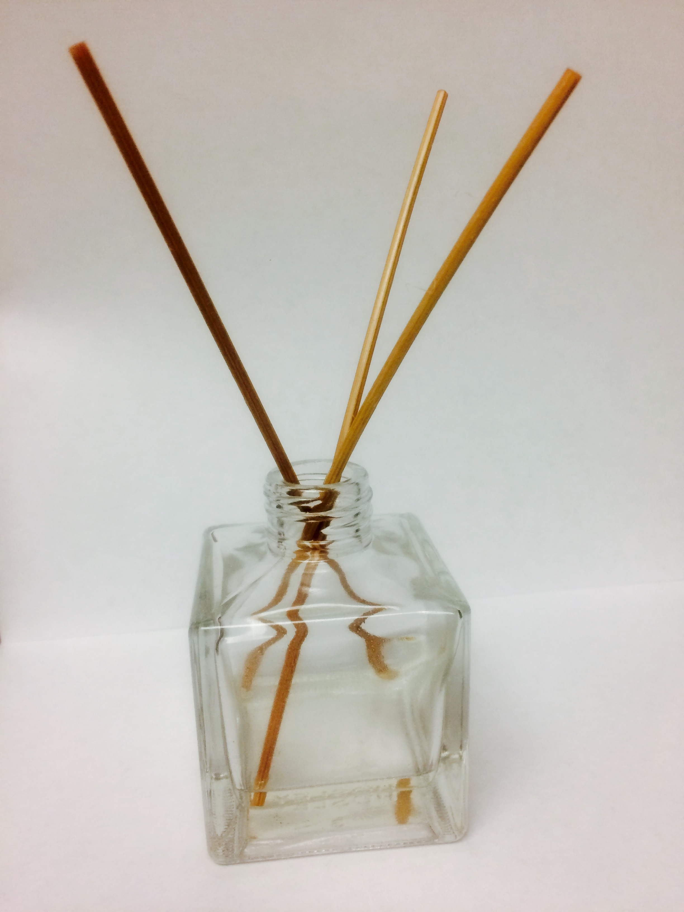 |
Ambientador File:Reed diffuser.jpg |
Alex Tang | cc0 | Fuente original |
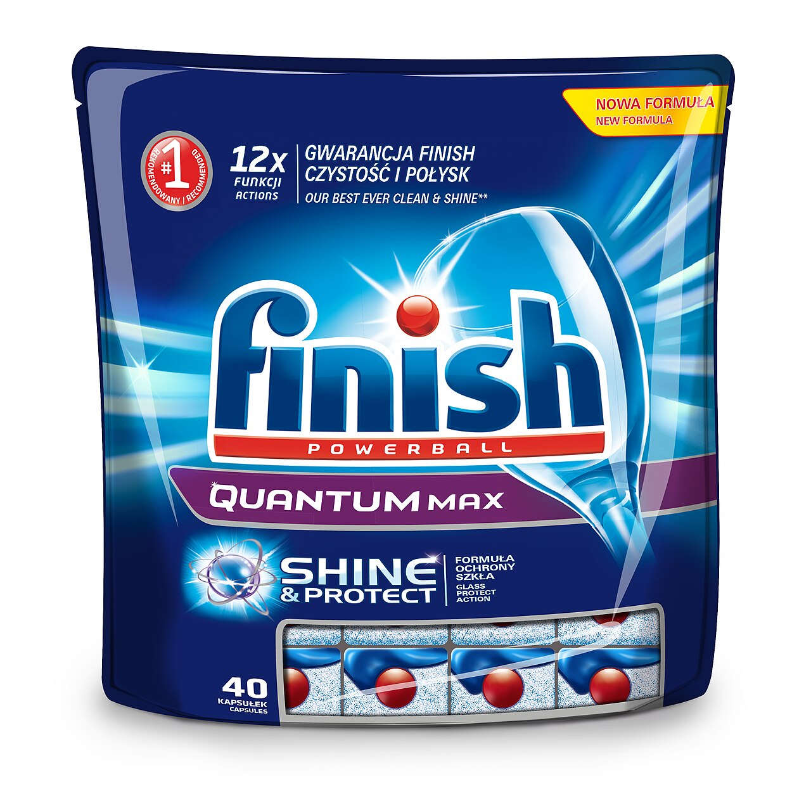 |
Pastillas de lavavajillas Finish Quantum Max.jpg — foto del producto real de la marca (misma gama Quantum) |
Julia.saniewska | CC BY-SA 4.0 | Fuente original |
 |
Lavadora Washing machine agitator |
BrokenSphere | by-sa | Fuente original |
 |
Detergente Detergent - Persil Megaperls 03.jpg |
Kritzolina | CC BY-SA 4.0 | Fuente original |
 |
Productos de limpieza File:Mohkam Mopping.jpg |
Hardeep Singh from Vancouver, Canada | CC BY 2.0 | Fuente original |
 |
Cápsulas de café Nespresso-capsules AB-01.jpg |
Chepry 💬 ( Andrzej Barabasz ) 📷 🇵🇱 | CC BY-SA 4.0 | Fuente original |
 |
Café molido Coarsely grounded coffee beans in white bowl.png |
Alorin | CC BY 4.0 | Fuente original |
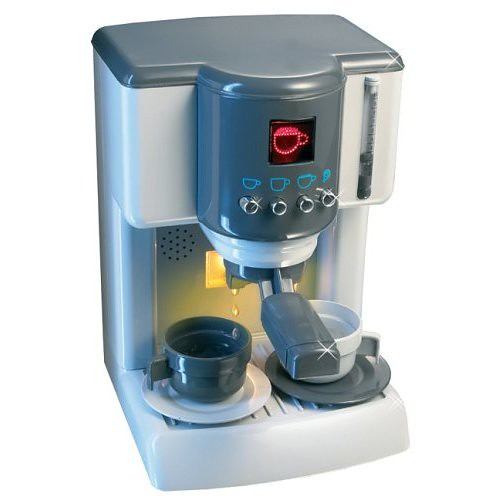 |
Cafetera de espresso Cafetera de espresso (Openverse) |
DanLacher (Openverse) | CC BY 2.0 | Fuente original |
| Aceite de oliva Bottle of olive oil.jpg |
margenauer from Pixabay | CC0 | Fuente original | |
 |
Pañales para bebé Baby diaper |
Kyle Flood from Victoria, British Columbia, Canada | by-sa | Fuente original |
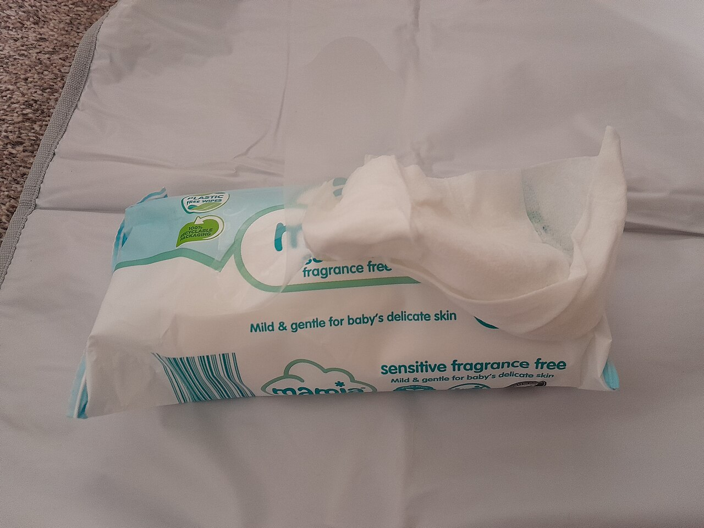 |
Toallitas para bebé File:Disinfectant wipes.jpg |
MrBeastRapper | CC BY-SA 4.0 | Fuente original |
| Higiene dental Toothbrush, Toothpaste, Dental Care (571741) (cropped) |
Steve Buissinne, South Africa | cc0 | Fuente original | |
 |
Fitness en casa dumbbells_adjusted |
jerryonlife | by | Fuente original |
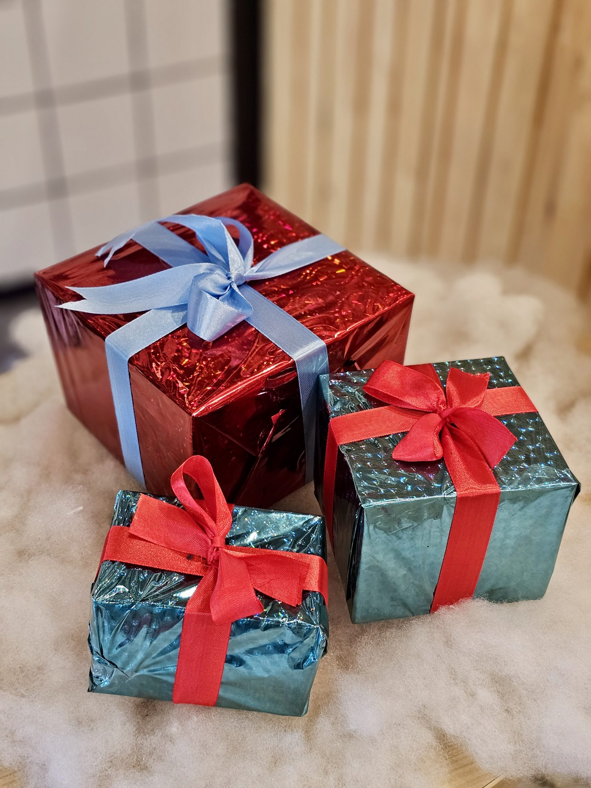 |
Regalos Colourful gift boxes wrapped in shiny paper with ribbons, arranged on a soft white surface. The warm lighting adds a cozy, festive mood. This joyful Christmas scene was photographed in Kozhikode, Kerala. |
Bigul Malayi | cc0 | Fuente original |
Logotipos de marca (uso identificativo)
Las imágenes que aparecen junto al nombre de los artículos son logotipos de marca descargados de Wikimedia Commons. Se emplean con fines meramente identificativos: indicar a qué marca corresponde cada producto. Los logotipos son propiedad de sus respectivos titulares, que no patrocinan ni respaldan este sitio; su reproducción se realiza bajo las licencias libres indicadas en la tabla.
El logotipo no es una fotografía del artículo concreto: la imagen real del producto puede consultarse en el enlace de Amazon de cada fila.
| Logotipo | Marca | Autoría | Licencia | Origen |
|---|---|---|---|---|
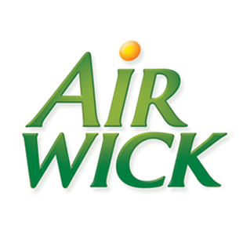 | Logotipo de Air Wick Uso identificativo de la marca | Reckitt Benckiser | Public domain | Wikimedia Commons |
 | Logotipo de Amazon Uso identificativo de la marca | Amazon.com, Inc., Koto, and NaN (typeface creator) | Public domain | Wikimedia Commons |
 | Logotipo de Anker Uso identificativo de la marca | Anker | Public domain | Wikimedia Commons |
 | Logotipo de Apple Uso identificativo de la marca | Original: Rob Janoff | Public domain | Wikimedia Commons |
 | Logotipo de ASUS Uso identificativo de la marca | Asus | Public domain | Wikimedia Commons |
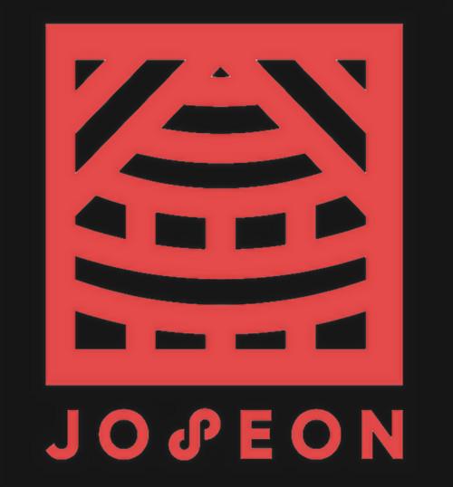 | Logotipo de Beauty of Joseon Uso identificativo de la marca | Government of Joseon | Public domain | Wikimedia Commons |
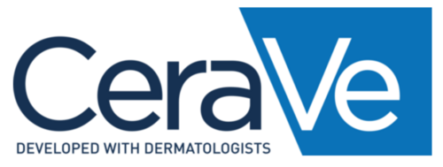 | Logotipo de CeraVe Uso identificativo de la marca | Wikimedia Commons | Public domain | Wikimedia Commons |
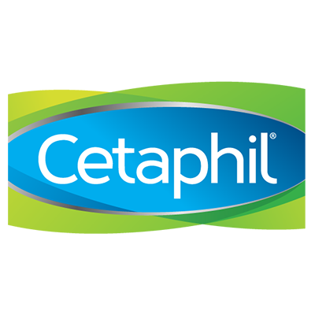 | Logotipo de Cetaphil Uso identificativo de la marca | Cetaphil Thailand | CC BY-SA 4.0 | Wikimedia Commons |
| Logotipo de Colgate Uso identificativo de la marca | The original uploader was Vargklo at English Wikipedia. | Public domain | Wikimedia Commons | |
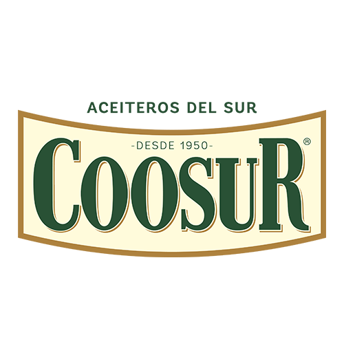 | Logotipo de Coosur Uso identificativo de la marca | Acesur1840 | CC BY-SA 4.0 | Wikimedia Commons |
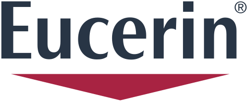 | Logotipo de Eucerin Uso identificativo de la marca | Eucerin | Public domain | Wikimedia Commons |
 | Logotipo de Garnier Uso identificativo de la marca | L'Oreal | Public domain | Wikimedia Commons |
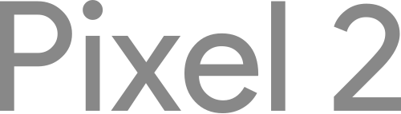 | Logotipo de Google Pixel Uso identificativo de la marca | NiloGlock | Public domain | Wikimedia Commons |
 | Logotipo de Hawaiian Tropic Uso identificativo de la marca | EDGEWELL | Public domain | Wikimedia Commons |
 | Logotipo de Head & Shoulders Uso identificativo de la marca | Unknown authorUnknown author | Public domain | Wikimedia Commons |
 | Logotipo de HP Uso identificativo de la marca | HP Inc. | Public domain | Wikimedia Commons |
 | Logotipo de Huggies Uso identificativo de la marca | WesdsMe3 | CC BY-SA 4.0 | Wikimedia Commons |
 | Logotipo de Instituto Español Uso identificativo de la marca | Instituto Español | Public domain | Wikimedia Commons |
 | Logotipo de JBL Uso identificativo de la marca | JBL | Public domain | Wikimedia Commons |
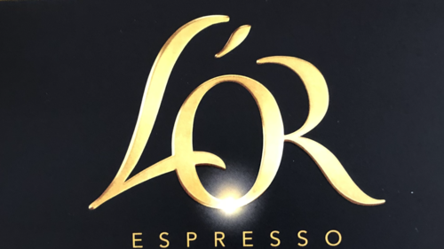 | Logotipo de L'OR Uso identificativo de la marca | Goodwillgames | CC BY-SA 4.0 | Wikimedia Commons |
| Logotipo de L'Oréal Paris Uso identificativo de la marca | L'Oréal | Public domain | Wikimedia Commons | |
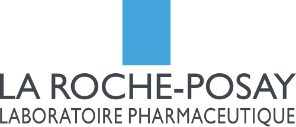 | Logotipo de La Roche-Posay Uso identificativo de la marca | Unknown authorUnknown author | Public domain | Wikimedia Commons |
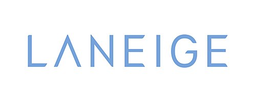 | Logotipo de Laneige Uso identificativo de la marca | Laneige | CC BY 2.5 | Wikimedia Commons |
 | Logotipo de Lenovo Uso identificativo de la marca | Original: Lenovo Group Derivative work: Fry1989 | Public domain | Wikimedia Commons |
 | Logotipo de LG Uso identificativo de la marca | Alter73 | CC BY-SA 4.0 | Wikimedia Commons |
 | Logotipo de Logitech Uso identificativo de la marca | Logitech | Public domain | Wikimedia Commons |
 | Logotipo de Marshall Uso identificativo de la marca | en:User:Asenine | Public domain | Wikimedia Commons |
 | Logotipo de Nescafé Dolce Gusto Uso identificativo de la marca | Unknown authorUnknown author | Public domain | Wikimedia Commons |
| Logotipo de Nespresso Uso identificativo de la marca | Unknown authorUnknown author | Public domain | Wikimedia Commons | |
 | Logotipo de NIVEA Uso identificativo de la marca | Beiersdof AG | Public domain | Wikimedia Commons |
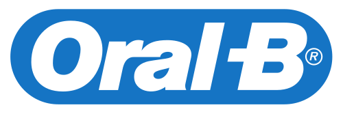 | Logotipo de Oral-B Uso identificativo de la marca | Wikimedia Commons | Public domain | Wikimedia Commons |
 | Logotipo de Pantene Uso identificativo de la marca | Procter & Gamble | Public domain | Wikimedia Commons |
 | Logotipo de POCO Uso identificativo de la marca | Xiaomi Inc. | Public domain | Wikimedia Commons |
| Logotipo de Samsung Uso identificativo de la marca | Samsung | CC BY 4.0 | Wikimedia Commons | |
 | Logotipo de Sonos Uso identificativo de la marca | Unknown authorUnknown author | Public domain | Wikimedia Commons |
 | Logotipo de Sony Uso identificativo de la marca | Yasuo Kuroki, Sony | Public domain | Wikimedia Commons |
| Logotipo de Starbucks Uso identificativo de la marca | Starbucks Corporation | Public domain | Wikimedia Commons | |
 | Logotipo de Ultimate Ears Uso identificativo de la marca | Ultimate Ears | Public domain | Wikimedia Commons |
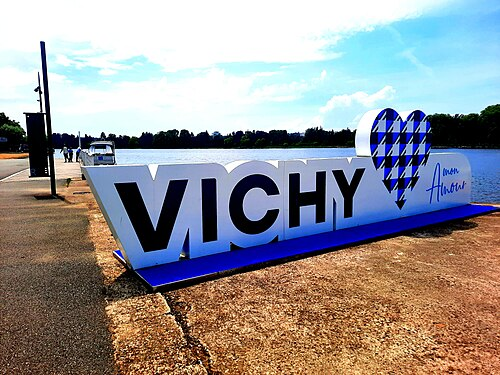 | Logotipo de Vichy Uso identificativo de la marca | Thalia Gylonno | CC BY-SA 2.0 | Wikimedia Commons |
 | Logotipo de Xiaomi Uso identificativo de la marca | Xiaomi | Public domain | Wikimedia Commons |